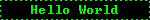
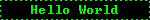
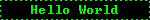

It's not that I don't know how to make a modern-looking website. I grew up with the internet in the 2000s and I like the look of the Old Web.
I have recently successfully defended my PhD thesis at Nanyang Technological University in Singapore. In my thesis I investigated the dynamical and braiding properties of anyons (quasiholes) in fractional quantum Hall states. My research is focused on the traditional 2-dimensional electron gas (2DEG) in Gallium-Arsenide (GaAs) systems, and is based heavily on numerical calculations. At the moment I am interested in behaviours of non-Abelian anyons under realistic interactions, and I am looking for ways improve numerical routines, i.e. going to larger systems than before. So far, the latter tasks seem to need a lot of work, however. I am also interested in elementary excitations in other similar systems e.g. fractional Chern insulators.
Under construction
Under construction
See my articles on Google Scholar | arXiv
Under construction

It's not that I don't know how to make a modern-looking website. I grew up with the internet in the 2000s and I like the look of the Old Web.